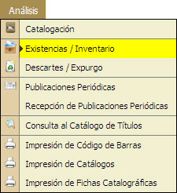
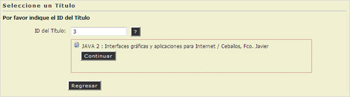
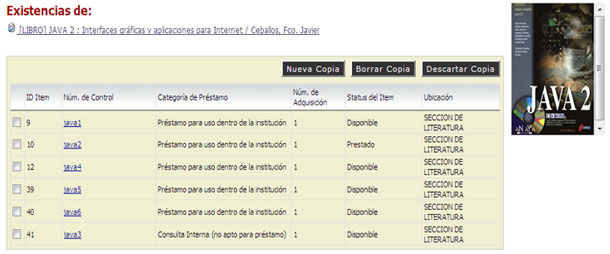
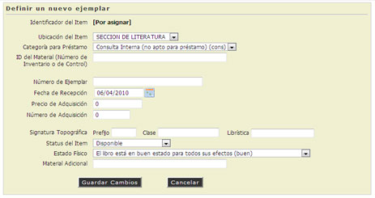
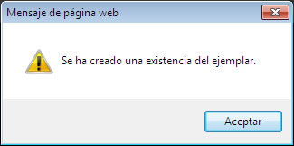
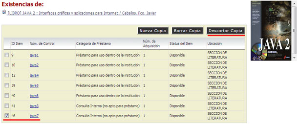
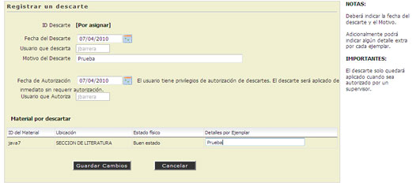
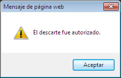
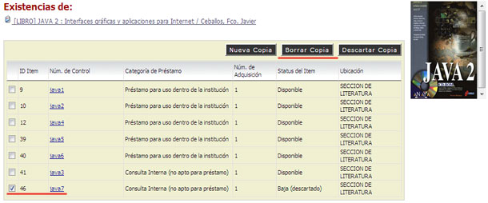
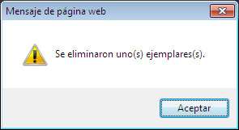

1.2. Existencias / Inventarios
En esta opción el Administrador del Sistema podrá verificar las existencias de un Material Especifico mediante el ID del Material, mostrará las Características y status del Material.
REQUISITO: Para verificar Existencias e Inventarios el usuario administrador debe contar con los suficientes privilegios para realizar acciones especificas y se deberá tener el ID del Título a consultar.

<NUEVA COPIA DE UN TÍTULO>
- Escribir el ID del título. (Nota: El ID es un identificador numérico)
- Hacer "Clic" en la opción [Continuar].

- El sistema mostrará todas las existencias, el status y las diferentes acciones que se pueden realizar del título identificado.

- Hacer "Clic" en la opción [Nueva Copia].
- Se mostraran los datos requeridos para definir el Nuevo Ejemplar.

- "Seleccionar" la Ubicación del Item.
- "Seleccionar" la categoría para Prestamo.
- Escribir el ID del material. (Nota: El ID es un identificador numérico unico para el control del material, puede ser el codigo de barras)
- Escribir el Número de Parte o Pieza del Material.
- "Seleccionar" fecha de Recepción.
- Escribir el Número de Adquisición.
- Escribir la Signatura Topográfica.
- El prefijo es opcional y la clase es según la clasificación a utilizar.
- "Seleccionar" el Status del Item.
- "Seleccionar" el Estado Físico del Material.
- Hacer "Clic" en opción [Guardar Cambios].
- Mensaje de Alerta, los datos han sido registrados.

<DESCARTAR COPIA>
- Escribir el ID del título. (Nota: El ID es un identificador numérico)
- Hacer "Clic" en opción [Continuar].
- El sistema mostrará todas las existencias, el status y las diferentes acciones que se pueden realizar del título identificado.
- "Seleccionar" la o las casillas de las Copias que serán Descartadas.
- Hacer "Clic" en la opción [Descartar Copia].

- El sistema mostrará los datos requeridos para Registrar un Descarte.
- "Seleccionar" la Fecha del Descarte.
- Usuario que descarta. (El usuario aparecerá automaticamente y no podrá ser cambiado)
- Escribir los motivos del Descarte.

- Si el usuario tiene los privilegios suficientes para la autorización del Descarte, se realizara inmediantamente sin necesidad de autorización.
- "Seleccionar" la Fecha de Autorización.
- Hacer " Clic" en la opción [Guardar Cambios].
- El sistema mostrará un Mensaje de Alerta.

<BORRAR COPIA>
- Escribir el ID del título. (Nota: El ID es un identificador numérico)
- Hacer "Clic" en la opción [Continuar].
- El sistema mostrará todas las existencias, el status y las diferentes acciones que se pueden realizar del título identificado.

- "Seleccionar" la o las casillas de las Copias que serán Borradas.
- Hacer "Clic" en la opción [Borrar Copia]. (NOTA: La copia de Libro será Borrada si la copia no ha pasado por el proceso de circulación)
- El sistema mostrará un Mensaje de Alerta.

NOTA: El Botón con el Símbolo de Interrogación (?) , puede ayudarnos a Localizar o Consultar un Usuario de la Institución o un Ítem de un Material.